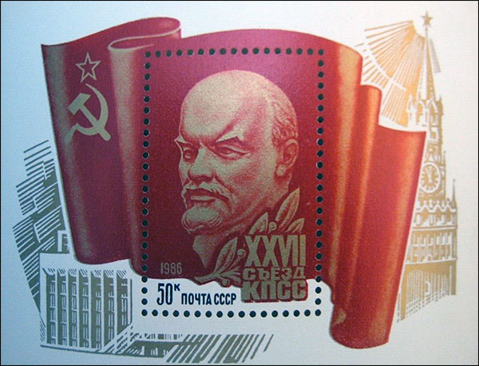
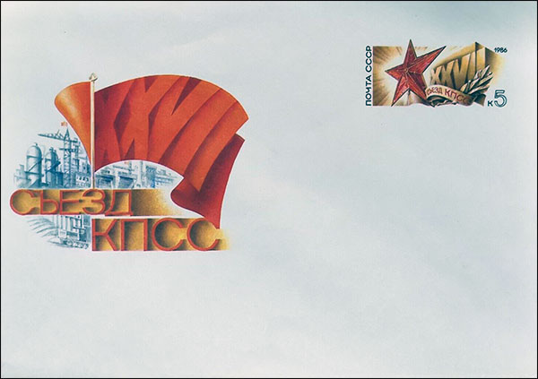
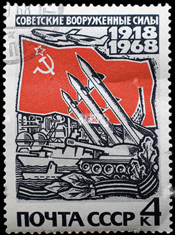
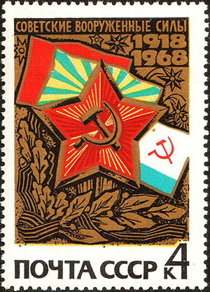
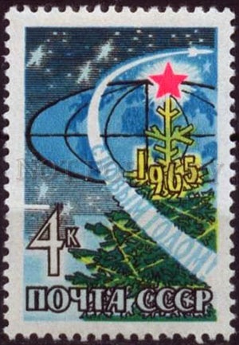
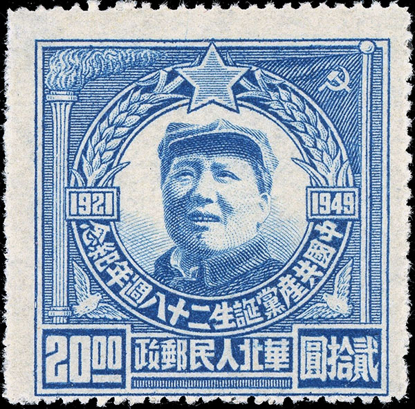
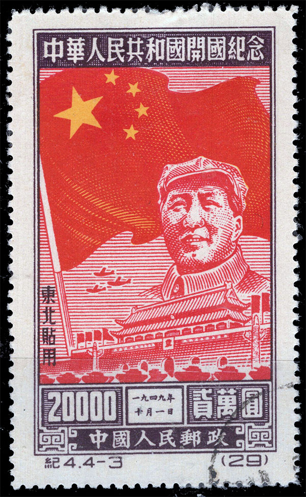
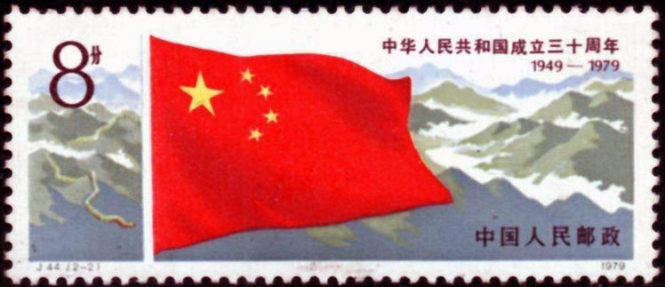
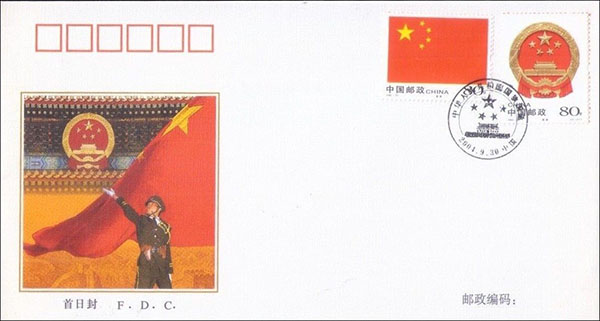
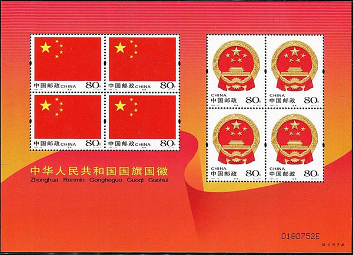

TWINKLE, TWINKLE, LITTLE STAR
Twinkle, twinkle, little star,
How I wonder what you are!
(English Lullaby)A solid red five-pointed star is a symbol that has often been historically associated with communist ideology, especially in combination with the hammer and sickle, but is also used as a purely socialist symbol in the 21st century. It has been widely used in flags, state emblems, monuments, ornaments and logos.

USSR, 1986, 27th Congress of the CPOne interpretation sees the five points representing the five fingers of the worker's hand, as well as the five populated continents (counting America as one).

USSR. 1986. 27th Congress of the CPA lesser-known suggestion is that, in communist symbolism, the five points on the star were meant to represent the five social groups that would lead Russia to communism: the youth, the military, the industrial workers, the agricultural workers or peasantry, and the intelligentsia.


USSR. 1968. Soviet armed forces.In Soviet heraldry, the red star symbolizes the Red Army and military service, unlike the hammer and sickle, which symbolizes peaceful work. Source

Russia 1922. Overprint on old coats of arms. USSR 1965. New Year.What does 5 stars on a flag mean?
According to the official government interpretation of the flag, the red background symbolizes the Chinese Communist Revolution. The five stars and their relationship represent the unity of the Chinese people under the leadership of the Chinese Communist Party.
China. 1949. Mao and Star.
The orientation of the stars shows that the unit must rotate around a center.

China. 1950. Mao and flag.
The national flag of the People's Republic of China, also known as the Five Star Red Flag, is a Chinese red field with five gold stars. The design features a large star with four smaller stars in an arch.

China. 1979. Stars on flag.It has been the national flag of China since the founding of the People's Republic of China on October 1, 1949. The flag was designed by Zeng Liansong.
China. 2015. Stars on flags, children.Red represents the Chinese Communist Revolution. The five stars and the relationships between them represent the unity of four social classes of Chinese, symbolized by four smaller stars, under the Chinese Communist Party (CCP), symbolized by the big star.

China. 2004. Stars on flags, Tienanmen, soldierThe flag was first flown by the People's Liberation Army (PLA) on a pole overlooking Tiananmen Square in Beijing on October 1, 1949, at a ceremony proclaiming the founding of the People's Republic of China. Source

China. 2004. Stars on flags, Tienanmen.It is obvious how the red star symbol was taken over from the victorious Russian communist plotters by their Chinese comrades, the latter inflating the number of stars. We will show on a future page how this symbol spread in the 20th Century all over the globe, spread by the communist plague, from Mongolia to Cuba...

|
|
Created: Feb. 15, 2024.
Revised:
Feb. 15 , 2024
. |